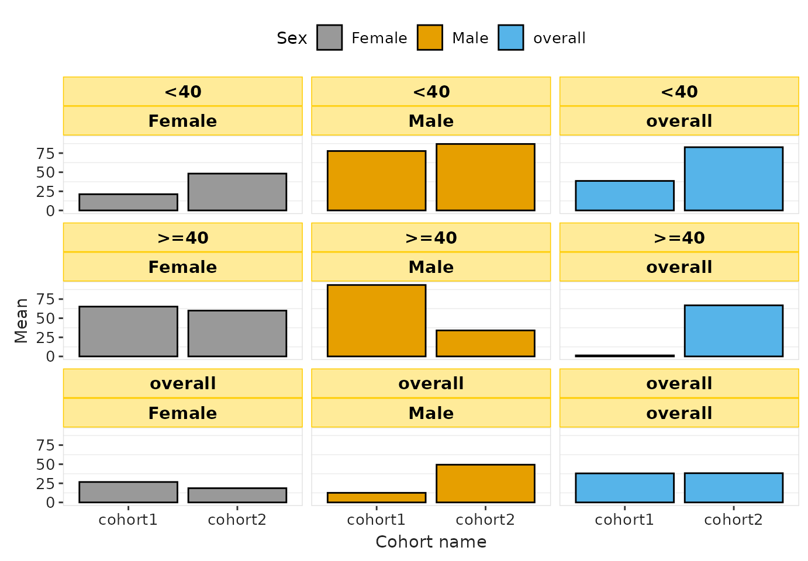
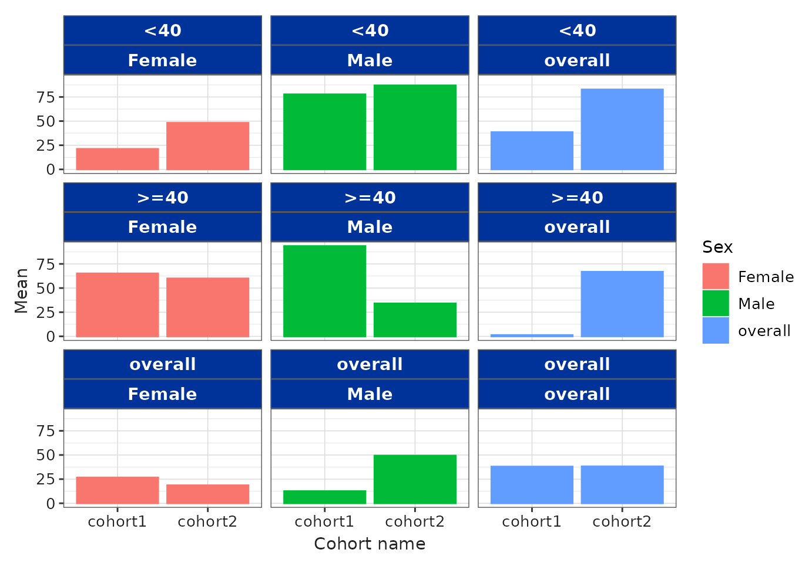

Introduction
In this vignette, we explain how to customise the visualisation of
tables and plots. The vignette reviews the structure of the
.yml files that define styles, and demonstrates how to
create and apply custom styles. It also shows how to style tables and
plots programmatically, without the need to create a .yml
file.
The package currently includes two built-in styles for tables and
plots. Styles are defined using .yml files. To list the
available styles, use:
tableStyle()
#> [1] "darwin" "default"
plotStyle()
#> [1] "darwin" "default"Branding styles using .yml
The package contains two built-in styles: "default" and
"darwin". The .yml files for these styles can
be found here.
.yml structure
We use the "darwin" style as an example. The code chunk
below shows the structure of its .yml file:
color:
palette:
white: '#ffffff'
darwin_blue: '#003399'
foreground: black
background: white
primary: darwin_blue
logo:
path: https://www.ema.europa.eu/sites/default/files/styles/oe_bootstrap_theme_medium_no_crop/public/2024-07/DARWINEU_logo_LARGE.png?itok=NtwlLhSX
typography:
base:
family: Calibri
size: '11'
defaults:
shiny:
theme:
preset: flatly
visOmopResults:
template: system.file("darwinReportRef.docx", package = "visOmopResults")
plot:
font_family: Calibri
font_size: '11'
background_color: white
header_color: darwin_blue
header_text_color: white
header_text_bold: yes
grid_major_color: '#d9d9d9'
axis_color: '#252525'
border_color: '#595959'
legend_position: right
table:
font_family: Calibri
font_size: '9'
border_color: darwin_blue
border_width: 1
header:
background_color: darwin_blue
text_bold: yes
align: center
text_color: white
border_color: white
font_size: 11
header_name:
background_color: darwin_blue
text_bold: yes
align: center
text_color: white
border_color: white
font_size: 11
header_level:
background_color: darwin_blue
text_bold: yes
align: center
text_color: white
border_color: white
font_size: 11
column_name:
background_color: darwin_blue
text_bold: yes
align: center
text_color: white
border_color: white
font_size: 11
group_label:
background_color: darwin_blue
text_bold: yes
text_color: white
border_color: white
title:
text_bold: yes
align: center
font_size: 15
subtitle:
text_bold: yes
align: center
font_size: 12
body:
border_width: 0.5
border_color: darwin_blueThe .yml structure can be divided into four main
sections:
-
Color: Defines the color palette and the default
backgroundandforegroundcolors used when a plot/table section does not override them. - Typography: Defines default font families and sizes for base text, plots, and tables (these can be overridden in the plot/table sections).
- Plot: Plot-specific settings such as background color, facet header color, header text color and bold, grid color, axis color, border color, and legend position. Font settings are taken from the typography section unless overridden here.
-
Table: Table-specific settings. You can set an
overall
border-colorandborder-width, or override settings per table section. Table sections include:header,header-name,header-level,column-name,group-label,title,subtitle, andbody. For each section you can set properties such asbackground-color,text-color,text-bold,align,font-size,border-color, andborder-width.
Style hierarchy
Each plot and table element follows a style hierarchy. If a value
isn’t specified at the most specific level, it inherits from
higher-level entries; if none are defined, the default
ggplot2 (for plots) or the default for the specific table
type is used. The table below shows the priority order for common plot
and table options.
| Part | Option 1 | Option 2 | Option 3 |
|---|---|---|---|
| Plot | |||
| Background color | defaults:visOmopResults:plot:background-color | color:background | - |
| Header (facet) color | defaults:visOmopResults:plot:header-color | color:foreground | - |
| Header (facet) text color | defaults:visOmopResults:plot:header-text-color | - | - |
| Header (facet) text bold | defaults:visOmopResults:plot:header-text-bold | color:foreground | - |
| Border color | defaults:visOmopResults:plot:border-color | - | - |
| Grid color | defaults:visOmopResults:plot:grid-major-color | color:foreground | - |
| Axis color | defaults:visOmopResults:plot:axis-color | - | - |
| Legend position | defaults:visOmopResults:plot:legend-position | - | - |
| Font family | defaults:visOmopResults:plot:font_family | typography:base:family | - |
| Font size | defaults:visOmopResults:plot:font_size | defaults:visOmopResults:plot:font_size | typography:base:size |
| Table section | |||
| Background color | defaults:visOmopResults:table:[section_name]:background-color | color:background | - |
| Text bold | defaults:visOmopResults:table:[section_name]:text-bold | - | - |
| Text color | defaults:visOmopResults:table:[section_name]:text-color | - | - |
| Text align | defaults:visOmopResults:table:[section_name]:align | - | - |
| Font size | defaults:visOmopResults:table:[section_name]:font-size | defaults:visOmopResults:table:font-size | defaults:visOmopResults:typography:base:size |
| Font family | defaults:visOmopResults:table:[section_name]:font-family | defaults:visOmopResults:table:font_family | typography:base:family |
| Border color | defaults:visOmopResults:table:[section_name]:border-color | defaults:visOmopResults:table:border-color | - |
| Border width | defaults:visOmopResults:table:[section_name]:border-width | defaults:visOmopResults:table:border-width | - |
In the examples above the YML path is represented with colon
separators. For example, plot:background-color refers to
the background-color key inside the plot
section.
Applying styles to tables and plots
The table-formatting functions (visTable(),
visOmopTable(), and formatTable()) and plot
functions accept a style argument. The style
argument can be:
- the name of a built-in style (e.g.
"darwin"), or
- the path to a user
.ymlfile that defines a custom style, or
- a programmatic list that mirrors the
.ymlstructure (only tables - see next section).
Example: apply the built-in "darwin" style to a
plot:
result <- mockSummarisedResult() |>
filter(variable_name == "age")
barPlot(
result = result,
x = "cohort_name",
y = "mean",
facet = c("age_group", "sex"),
colour = "sex",
style = "darwin"
)
Example: use a custom .yml file (path provided):
Use of _brand.yml
If style = NULL and no global options are provided (via
setGlobalPlotOptions() or
setGlobalTableOptions()), the built-in “default” style is
used. However, if a _brand.yml file is present in the
project directory, that file’s style will be used.
Alternative style customisation
You can customise styles programmatically without creating a
.yml file by passing a named list to the style
argument. The list should follow the same table section structure as the
.yml.
Tables
Below is an example that sets table section styles for
gt.
result |>
visOmopTable(
estimateName = c("Mean (SD)" = "<mean> (<sd>)"),
groupColumn = "cohort_name",
header = c("This is an overall header", "sex"),
type = "gt",
style = list(
header = list(
cell_text(weight = "bold"),
cell_fill(color = "red")
),
header_name = list(
cell_text(weight = "bold"),
cell_fill(color = "orange")
),
header_level = list(
cell_text(weight = "bold"),
cell_fill(color = "yellow")
),
column_name = list(
cell_text(weight = "bold")
),
group_label = list(
cell_fill(color = "blue"),
cell_text(color = "white", weight = "bold")
),
title = list(
cell_text(size = 20, weight = "bold")
),
subtitle = list(
cell_text(size = 15)
),
body = list(
cell_text(color = "red")
)
),
.options = list(
title = "My formatted table!",
subtitle = "Created with the `visOmopResults` R package.",
groupAsColumn = FALSE,
groupOrder = c("cohort2", "cohort1")
)
)| My formatted table! | |||||||
| Created with the `visOmopResults` R package. | |||||||
|
This is an overall header
|
|||||||
|---|---|---|---|---|---|---|---|
| CDM name | Age group | Variable name | Variable level | Estimate name |
Sex
|
||
| overall | Male | Female | |||||
| cohort2 | |||||||
| mock | overall | age | – | Mean (SD) | 38.24 (7.89) | 49.35 (4.78) | 18.62 (8.61) |
| <40 | age | – | Mean (SD) | 82.74 (4.38) | 86.97 (0.23) | 48.21 (7.32) | |
| >=40 | age | – | Mean (SD) | 66.85 (2.45) | 34.03 (4.77) | 59.96 (6.93) | |
| cohort1 | |||||||
| mock | overall | age | – | Mean (SD) | 38.00 (7.94) | 12.56 (6.47) | 26.72 (7.83) |
| <40 | age | – | Mean (SD) | 38.61 (5.53) | 77.74 (1.08) | 21.21 (4.11) | |
| >=40 | age | – | Mean (SD) | 1.34 (5.30) | 93.47 (7.24) | 65.17 (8.21) | |
Note that style objects differ across table engines, so the code must be adapted to the engine you use.
For flextable, styling objects come from the
officer package. The structure is similar, but the style
objects differ:
result |>
visOmopTable(
estimateName = c("Mean (SD)" = "<mean> (<sd>)"),
groupColumn = "cohort_name",
header = c("This is an overall header", "sex"),
type = "flextable",
style = list(
header = list(
cell = fp_cell(background.color = "red"),
text = fp_text(bold = TRUE)
),
header_level = list(
cell = fp_cell(background.color = "orange"),
text = fp_text(bold = TRUE)
),
header_name = list(
cell = fp_cell(background.color = "yellow"),
text = fp_text(bold = TRUE)
),
column_name = list(
text = fp_text(bold = TRUE)
),
group_label = list(
cell = fp_cell(background.color = "blue"),
text = fp_text(bold = TRUE, color = "white")
),
title = list(
text = fp_text(bold = TRUE, font.size = 20)
),
subtitle = list(
text = fp_text(font.size = 15)
),
body = list(
text = fp_text(color = "red")
)
),
.options = list(
title = "My formatted table!",
subtitle = "Created with the `visOmopResults` R package.",
groupAsColumn = FALSE,
groupOrder = c("cohort2", "cohort1")
)
)My formatted table! | |||||||
|---|---|---|---|---|---|---|---|
Created with the `visOmopResults` R package. | |||||||
CDM name |
Age group |
Variable name |
Variable level |
Estimate name |
This is an overall header |
||
Sex | |||||||
overall |
Male |
Female |
|||||
cohort2 | |||||||
mock |
overall |
age |
– |
Mean (SD) |
38.24 (7.89) |
49.35 (4.78) |
18.62 (8.61) |
<40 |
age |
– |
Mean (SD) |
82.74 (4.38) |
86.97 (0.23) |
48.21 (7.32) |
|
>=40 |
age |
– |
Mean (SD) |
66.85 (2.45) |
34.03 (4.77) |
59.96 (6.93) |
|
cohort1 | |||||||
mock |
overall |
age |
– |
Mean (SD) |
38.00 (7.94) |
12.56 (6.47) |
26.72 (7.83) |
<40 |
age |
– |
Mean (SD) |
38.61 (5.53) |
77.74 (1.08) |
21.21 (4.11) |
|
>=40 |
age |
– |
Mean (SD) |
1.34 (5.30) |
93.47 (7.24) |
65.17 (8.21) |
|
Plots
Plot helpers return ggplot2 objects, so you can further
modify them using + and regular ggplot2
calls:
library(ggplot2)
barPlot(
result = result,
x = "cohort_name",
y = "mean",
facet = c("age_group", "sex"),
colour = "sex"
) +
theme(
strip.background = element_rect(fill = "#ffeb99", colour = "#ffcc00"),
legend.position = "top",
panel.grid.major = element_line(color = "transparent", linewidth = 0.25)
) +
scale_color_manual(values = c("black", "black", "black")) +
scale_fill_manual(values = c("#999999", "#E69F00", "#56B4E9"))
Using non-registered font families in ggplot2
To use a specific font family in ggplot2, the font must be:
Installed in the operating system, and
Available to R’s graphics device (registered, in the case of Windows).
Below is an example using the Calibri font.
1. Install the font in the system
On both macOS and Windows, install the .ttf file by double-clicking it and clicking Install.
Example source: https://www.freefontdownload.org/en/calibri.font
After installing new system fonts, restart R or RStudio so the font registry is refreshed.
2. Register the font
On macOS, most system fonts are automatically available to R’s Quartz graphics device (no need to register).
On Windows, however, the base graphics device does not automatically expose all installed system fonts. You must register a font before ggplot2 can use it. This can be done as follows:
windowsFonts(Calibri = windowsFont("Calibri"))- The
visOmopResultspackage automatically registers any installed font when needed, so users generally do not have to run this manually.
3. Create plots with styles that use the font
You can specify the font family in your YAML configuration, or
directly in theme() using element_text().
Below is an example using the “darwin” plot style, which will use
“Calibri” when available, otherwise falling back to “sans”:
barPlot(
result = result,
x = "cohort_name",
y = "mean",
facet = c("age_group", "sex"),
colour = "sex",
style = "darwin"
)
Important notes
After installing system fonts, restart R/RStudio so R can detect them.
On Windows, font registrations done with
windowsFonts()last only for the current R session and revert after restarting.For font detection across platforms,
visOmopResultsuses thesystemfontspackage and registers fonts on Windows when needed.
Final remarks
The .yml customisation system allows you to control most
aspects of the visual appearance of your tables and plots. To learn more
about brand.yml and how it interacts with other elements
such as Shiny apps and Quarto/R Markdown documents, refer to https://posit-dev.github.io/brand-yml/.